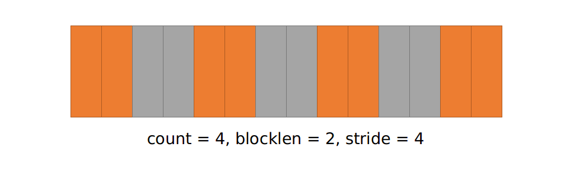
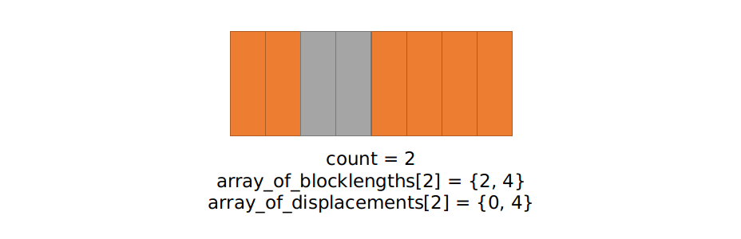

Consolidating Data
1 | double x[1000]; |
is much slower than
1 | double x[1000]; |
MPI provides three basic approaches to consolidating data that might otherwise require multiple messages
- the count argument to the various communication functions
- derived datatypes
- MPI_Pack/Unpack
Derived Datatypes
- A sending process can pack noncontiguous data into contiguous buffer and send the buffered data to a receiving process that can unpack the contiguous buffer and store the data to noncontiguous location
- A derived datatype is an opaque object that specifies
- A sequence of primitive datatypes
- A sequence of integer (byte) displacements
MPI Basic Data Types: https://www.mpi-forum.org/docs/mpi-2.1/mpi21-report-bw/node330.htm
Contiguous
Contiguous datatype constructors create a new datatype by making count copies of existing data type (old_type)
1 | int MPI_Type_contiguous(int count, |
Send a row of data once.
1 |
|
Vector
Returns a new datatype that represents equally spaced blocks. The spacing between the start of each block is given in units of extent (oldtype).
1 | int MPI_Type_vector(int count, /* the number of blocks */ |

Send a coloumn of data once.
1 |
|
Indexed
- Returns a new datatype that represents count blocks.
- Displacements are expressed in units of extent(oldtype).
- The
countis- the number of blocks
- the number of entries in
array_of_displacements(displacement of each block in units of the oldtype) andarray_of_blocklengths(number of instances of oldtype in each block)
1 | int MPI_Type_indexed(int count, |

- 從 0 (displacements[0]) 開始後 2 個 (blocklengths[0])
- 從 4 (displacements[1]) 開始後 4 個 (blocklengths[1])
1 |
|
1 | rank= 0 b = 6.0 7.0 8.0 9.0 13.0 14.0 |
Struct
- Returns a new datatype that represents count blocks.
- Displacements are expressed in
bytes. countis an integer that specifies the number of blocks (number of entries in arrays).array_of_blocklengthsis the number of elements in each blocksarray_of_displacementsspecifies the byte displacement of each block.array_of_typesrepresent type of elements in each block.
1 | int MPI_Type_create_struct(int count, |
1 |
|
MPI_Pack/MPI_Unpack
- We explicitly pack non-contiguous data into a contiguous buffer for transmission, then unpack it at the other end.
- When sending/receiving packed messages, must use
MPI_PACKEDdatatype in send/receive calls.
Packing
1 | int MPI_Pack(void* inbuf, |
- will pack the information specified by
inbufandincountinto the buffer space provided byoutbufandoutsize - the current packing call will pack this data starting at offset
positionin theoutbuf positionis incremented by the size of the packed message
Unpacking
1 | int MPI_Unpack(void* inbuf, |
- unpacks message to
outbuf - updates the
positionargument so it can be used in a subsequent call toMPI_Unpack
Example
Sender:
1 | int i, position = 0; |
Receiver:
1 | int i, position = 0; |
Comparision
- Pack/Unpack is quicker/easier to program.
- Derived datatypes are more flexible in allowing complex derived datatypes to be defined.
- Pack/Unpack has higher overhead.
- Derived datatypes are better if the datatype is regularly reused